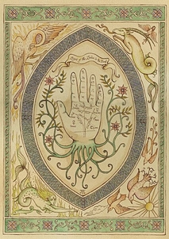
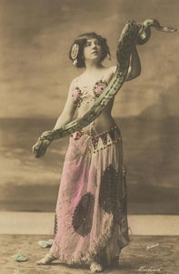

A wonderful and vintage circus which seems to be quite magical... And only with women performers!
Let yoursel be tempted and fall under the spell of its shows...
Boadicée

Boadicée is an amazing fortuneteller. She discovered her gift when she was seven years old. Since this day, she worked it hard to be able to use it for other people and to help them. If you don't believe that fortuneteller exist, you will change your mind after you will see her show! Her eyes can see through everything...
Brilda

Brilda is an incredible snake charmer. She discovered this practice while she was living in India during her youth and she had an eye for this art instantly. If you are not ophiophobic you will enjoy her magical show and her grace! The connection between her and her snakes is something not to miss!
Gilda
Gilda is contorsionist. Little girl of a couple of acrobats, brought up in a circus, she knew very early that she would live her life in the glitter that staging can offer. She started to practice her art when she was four years old and she never stopped. She now has an incredible level of contortion and when you will see her performing you won't believe your eyes!
{kind=link}
{kind=link}
{kind=link}